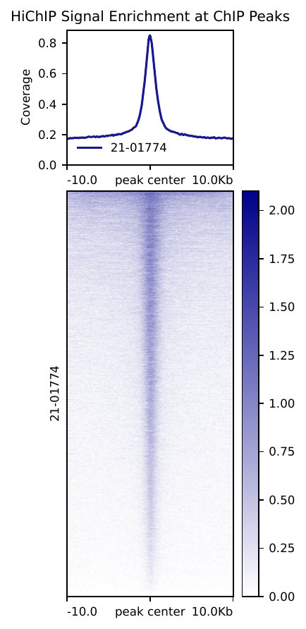
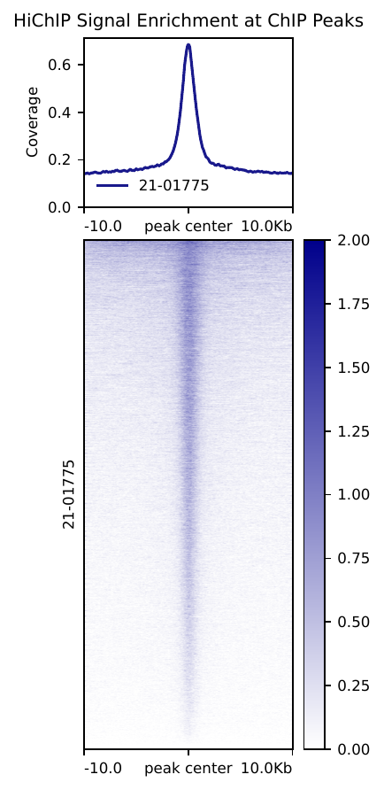

QC
Steve Pederson
2022-02-07
Last updated: 2022-02-08
Checks: 6 1
Knit directory: ZR-75_H3K27ac_HiChIP_testrun/
This reproducible R Markdown analysis was created with workflowr (version 1.7.0). The Checks tab describes the reproducibility checks that were applied when the results were created. The Past versions tab lists the development history.
The R Markdown is untracked by Git. To know which version of the R Markdown file created these results, you’ll want to first commit it to the Git repo. If you’re still working on the analysis, you can ignore this warning. When you’re finished, you can run wflow_publish to commit the R Markdown file and build the HTML.
Great job! The global environment was empty. Objects defined in the global environment can affect the analysis in your R Markdown file in unknown ways. For reproduciblity it’s best to always run the code in an empty environment.
The command set.seed(20220207) was run prior to running the code in the R Markdown file. Setting a seed ensures that any results that rely on randomness, e.g. subsampling or permutations, are reproducible.
Great job! Recording the operating system, R version, and package versions is critical for reproducibility.
Nice! There were no cached chunks for this analysis, so you can be confident that you successfully produced the results during this run.
Great job! Using relative paths to the files within your workflowr project makes it easier to run your code on other machines.
Great! You are using Git for version control. Tracking code development and connecting the code version to the results is critical for reproducibility.
The results in this page were generated with repository version a17fa1f. See the Past versions tab to see a history of the changes made to the R Markdown and HTML files.
Note that you need to be careful to ensure that all relevant files for the analysis have been committed to Git prior to generating the results (you can use wflow_publish or wflow_git_commit). workflowr only checks the R Markdown file, but you know if there are other scripts or data files that it depends on. Below is the status of the Git repository when the results were generated:
Ignored files:
Ignored: .Rproj.user/
Ignored: output/feather_output/21-01776_20220204_165523/21-01776.hic.input
Ignored: output/feather_output/21-01776_20220204_165523/21-01776.paired.bam
Ignored: output/feather_output/21-01776_20220204_165523/21-01776.paired.fixmated.bam
Ignored: output/feather_output/21-01776_20220204_165523/21-01776.paired.rmdup.bam
Ignored: output/feather_output/21-01776_20220204_165523/21-01776.paired.rmdup.bam.bai
Ignored: output/feather_output/21-01776_20220204_165523/21-01776.paired.srt.bam
Ignored: output/feather_output/21-01776_20220204_165523/21-01776.paired.srtn.rmdup.bam
Ignored: output/feather_output/21-01777_20220204_165809/21-01777.hic.input
Ignored: output/feather_output/21-01777_20220204_165809/21-01777.paired.bam
Ignored: output/feather_output/21-01777_20220204_165809/21-01777.paired.fixmated.bam
Ignored: output/feather_output/21-01777_20220204_165809/21-01777.paired.rmdup.bam
Ignored: output/feather_output/21-01777_20220204_165809/21-01777.paired.rmdup.bam.bai
Ignored: output/feather_output/21-01777_20220204_165809/21-01777.paired.srt.bam
Ignored: output/feather_output/21-01777_20220204_165809/21-01777.paired.srtn.rmdup.bam
Untracked files:
Untracked: analysis/QC.Rmd
Untracked: analysis/maps_setup.md
Untracked: analysis/merged_qc.Rmd
Untracked: code/21-01774_maps.sh
Untracked: code/21-01775_maps.sh
Untracked: code/21-01776_maps.sh
Untracked: code/21-01777_maps.sh
Untracked: code/E2_merged_maps.sh
Untracked: code/ED_merged_maps.sh
Untracked: code/maps.yaml
Untracked: data/GLL368_Arima-HiChIP_QC_Worksheet_A160170.xlsx
Untracked: data/ZR75_H3K27ac.bed
Untracked: data/fastq/
Untracked: output/21-01774.log
Untracked: output/21-01774_Arima_QC_deep.txt
Untracked: output/21-01774_Arima_QC_shallow.txt
Untracked: output/21-01775.log
Untracked: output/21-01775_Arima_QC_deep.txt
Untracked: output/21-01775_Arima_QC_shallow.txt
Untracked: output/21-01776.log
Untracked: output/21-01776_Arima_QC_deep.txt
Untracked: output/21-01776_Arima_QC_shallow.txt
Untracked: output/21-01777.log
Untracked: output/21-01777_Arima_QC_deep.txt
Untracked: output/21-01777_Arima_QC_shallow.txt
Untracked: output/E2_merged.log
Untracked: output/E2_merged_Arima_QC_deep.txt
Untracked: output/E2_merged_Arima_QC_shallow.txt
Untracked: output/ED_merged.log
Untracked: output/ED_merged_Arima_QC_deep.txt
Untracked: output/ED_merged_Arima_QC_shallow.txt
Untracked: output/MAPS_output/21-01774_20220207_135015/
Untracked: output/MAPS_output/21-01774_20220208_130435/
Untracked: output/MAPS_output/21-01774_20220208_164744/
Untracked: output/MAPS_output/21-01775_20220207_142027/
Untracked: output/MAPS_output/21-01775_20220208_130439/
Untracked: output/MAPS_output/21-01775_20220208_164753/
Untracked: output/MAPS_output/21-01776_20220208_130443/
Untracked: output/MAPS_output/21-01776_20220208_132152/
Untracked: output/MAPS_output/21-01776_20220208_132255/
Untracked: output/MAPS_output/21-01776_20220208_132311/
Untracked: output/MAPS_output/21-01776_20220208_132327/
Untracked: output/MAPS_output/21-01776_20220208_132443/
Untracked: output/MAPS_output/21-01777_20220208_130445/
Untracked: output/MAPS_output/21-01777_20220208_133340/
Untracked: output/MAPS_output/E2_merged_20220208_173413/
Untracked: output/MAPS_output/E2_merged_current
Untracked: output/MAPS_output/ED_merged_20220208_173429/
Untracked: output/MAPS_output/ED_merged_current
Untracked: output/arcplot_and_metaplot/E2_merged.coverage.bigwig
Untracked: output/arcplot_and_metaplot/E2_merged.coverage_matrix.tab.gz
Untracked: output/arcplot_and_metaplot/E2_merged.heatmap.pdf
Untracked: output/arcplot_and_metaplot/ED_merged.coverage.bigwig
Untracked: output/arcplot_and_metaplot/ED_merged.coverage_matrix.tab.gz
Untracked: output/arcplot_and_metaplot/ED_merged.heatmap.pdf
Untracked: output/feather_output/21-01774_20220207_135015/
Untracked: output/feather_output/21-01774_20220208_130435/
Untracked: output/feather_output/21-01774_20220208_164744/
Untracked: output/feather_output/21-01775_20220207_142027/
Untracked: output/feather_output/21-01775_20220208_130439/
Untracked: output/feather_output/21-01775_20220208_164753/
Untracked: output/feather_output/21-01776_20220208_130443/
Untracked: output/feather_output/21-01776_20220208_132152/
Untracked: output/feather_output/21-01776_20220208_132255/
Untracked: output/feather_output/21-01776_20220208_132311/
Untracked: output/feather_output/21-01776_20220208_132327/
Untracked: output/feather_output/21-01776_20220208_132443/
Untracked: output/feather_output/21-01777_20220208_130445/
Untracked: output/feather_output/21-01777_20220208_133340/
Untracked: output/feather_output/E2_merged_20220208_173413/
Untracked: output/feather_output/E2_merged_current
Untracked: output/feather_output/ED_merged_20220208_173429/
Untracked: output/feather_output/ED_merged_current
Unstaged changes:
Modified: .gitignore
Deleted: README.md
Deleted: ZR75_H3K27ac.bed
Modified: analysis/_site.yml
Deleted: analysis/about.Rmd
Modified: analysis/index.Rmd
Deleted: analysis/license.Rmd
Deleted: fastq/Reports/html/000000000-GB6P6/SAGCQA0256_GeriLavenLaw_02122021/21-01774/CGATGT/lane.html
Deleted: fastq/Reports/html/000000000-GB6P6/SAGCQA0256_GeriLavenLaw_02122021/21-01774/CGATGT/laneBarcode.html
Deleted: fastq/Reports/html/000000000-GB6P6/SAGCQA0256_GeriLavenLaw_02122021/21-01774/all/lane.html
Deleted: fastq/Reports/html/000000000-GB6P6/SAGCQA0256_GeriLavenLaw_02122021/21-01774/all/laneBarcode.html
Deleted: fastq/Reports/html/000000000-GB6P6/SAGCQA0256_GeriLavenLaw_02122021/21-01775/TGACCA/lane.html
Deleted: fastq/Reports/html/000000000-GB6P6/SAGCQA0256_GeriLavenLaw_02122021/21-01775/TGACCA/laneBarcode.html
Deleted: fastq/Reports/html/000000000-GB6P6/SAGCQA0256_GeriLavenLaw_02122021/21-01775/all/lane.html
Deleted: fastq/Reports/html/000000000-GB6P6/SAGCQA0256_GeriLavenLaw_02122021/21-01775/all/laneBarcode.html
Deleted: fastq/Reports/html/000000000-GB6P6/SAGCQA0256_GeriLavenLaw_02122021/21-01776/ACAGTG/lane.html
Deleted: fastq/Reports/html/000000000-GB6P6/SAGCQA0256_GeriLavenLaw_02122021/21-01776/ACAGTG/laneBarcode.html
Deleted: fastq/Reports/html/000000000-GB6P6/SAGCQA0256_GeriLavenLaw_02122021/21-01776/all/lane.html
Deleted: fastq/Reports/html/000000000-GB6P6/SAGCQA0256_GeriLavenLaw_02122021/21-01776/all/laneBarcode.html
Deleted: fastq/Reports/html/000000000-GB6P6/SAGCQA0256_GeriLavenLaw_02122021/21-01777/GCCAAT/lane.html
Deleted: fastq/Reports/html/000000000-GB6P6/SAGCQA0256_GeriLavenLaw_02122021/21-01777/GCCAAT/laneBarcode.html
Deleted: fastq/Reports/html/000000000-GB6P6/SAGCQA0256_GeriLavenLaw_02122021/21-01777/all/lane.html
Deleted: fastq/Reports/html/000000000-GB6P6/SAGCQA0256_GeriLavenLaw_02122021/21-01777/all/laneBarcode.html
Deleted: fastq/Reports/html/000000000-GB6P6/SAGCQA0256_GeriLavenLaw_02122021/all/all/lane.html
Deleted: fastq/Reports/html/000000000-GB6P6/SAGCQA0256_GeriLavenLaw_02122021/all/all/laneBarcode.html
Deleted: fastq/Reports/html/000000000-GB6P6/all/all/all/lane.html
Deleted: fastq/Reports/html/000000000-GB6P6/all/all/all/laneBarcode.html
Deleted: fastq/Reports/html/000000000-GB6P6/default/Undetermined/all/lane.html
Deleted: fastq/Reports/html/000000000-GB6P6/default/Undetermined/all/laneBarcode.html
Deleted: fastq/Reports/html/000000000-GB6P6/default/Undetermined/unknown/lane.html
Deleted: fastq/Reports/html/000000000-GB6P6/default/Undetermined/unknown/laneBarcode.html
Deleted: fastq/Reports/html/000000000-GB6P6/default/all/all/lane.html
Deleted: fastq/Reports/html/000000000-GB6P6/default/all/all/laneBarcode.html
Deleted: fastq/Reports/html/Report.css
Deleted: fastq/Reports/html/index.html
Deleted: fastq/Reports/html/tree.html
Deleted: fastq/Stats/AdapterTrimming.txt
Deleted: fastq/Stats/ConversionStats.xml
Deleted: fastq/Stats/DemultiplexingStats.xml
Deleted: fastq/Stats/DemuxSummaryF1L1.txt
Deleted: fastq/Stats/FastqSummaryF1L1.txt
Deleted: fastq/Stats/Stats.json
Deleted: fastq/fastq.md5
Deleted: maps.yaml
Deleted: output/MAPS_output/21-01774_20220204_164412/execution_script_copy
Deleted: output/MAPS_output/21-01774_20220204_164412/maps_21-01774.maps
Modified: output/MAPS_output/21-01774_current
Deleted: output/MAPS_output/21-01775_20220204_165131/execution_script_copy
Deleted: output/MAPS_output/21-01775_20220204_165131/maps_21-01775.maps
Modified: output/MAPS_output/21-01775_current
Modified: output/MAPS_output/21-01776_current
Modified: output/MAPS_output/21-01777_current
Modified: output/arcplot_and_metaplot/21-01774.coverage_matrix.tab.gz
Modified: output/arcplot_and_metaplot/21-01774.heatmap.pdf
Modified: output/arcplot_and_metaplot/21-01775.coverage_matrix.tab.gz
Modified: output/arcplot_and_metaplot/21-01775.heatmap.pdf
Modified: output/arcplot_and_metaplot/21-01776.coverage_matrix.tab.gz
Modified: output/arcplot_and_metaplot/21-01776.heatmap.pdf
Modified: output/arcplot_and_metaplot/21-01777.coverage_matrix.tab.gz
Modified: output/arcplot_and_metaplot/21-01777.heatmap.pdf
Deleted: output/feather_output/21-01774_20220204_164412/21-01774.chr1.long.intra.bedpe
Deleted: output/feather_output/21-01774_20220204_164412/21-01774.chr1.shrt.vip.bed
Deleted: output/feather_output/21-01774_20220204_164412/21-01774.chr10.long.intra.bedpe
Deleted: output/feather_output/21-01774_20220204_164412/21-01774.chr10.shrt.vip.bed
Deleted: output/feather_output/21-01774_20220204_164412/21-01774.chr11.long.intra.bedpe
Deleted: output/feather_output/21-01774_20220204_164412/21-01774.chr11.shrt.vip.bed
Deleted: output/feather_output/21-01774_20220204_164412/21-01774.chr12.long.intra.bedpe
Deleted: output/feather_output/21-01774_20220204_164412/21-01774.chr12.shrt.vip.bed
Deleted: output/feather_output/21-01774_20220204_164412/21-01774.chr13.long.intra.bedpe
Deleted: output/feather_output/21-01774_20220204_164412/21-01774.chr13.shrt.vip.bed
Deleted: output/feather_output/21-01774_20220204_164412/21-01774.chr14.long.intra.bedpe
Deleted: output/feather_output/21-01774_20220204_164412/21-01774.chr14.shrt.vip.bed
Deleted: output/feather_output/21-01774_20220204_164412/21-01774.chr15.long.intra.bedpe
Deleted: output/feather_output/21-01774_20220204_164412/21-01774.chr15.shrt.vip.bed
Deleted: output/feather_output/21-01774_20220204_164412/21-01774.chr16.long.intra.bedpe
Deleted: output/feather_output/21-01774_20220204_164412/21-01774.chr16.shrt.vip.bed
Deleted: output/feather_output/21-01774_20220204_164412/21-01774.chr17.long.intra.bedpe
Deleted: output/feather_output/21-01774_20220204_164412/21-01774.chr17.shrt.vip.bed
Deleted: output/feather_output/21-01774_20220204_164412/21-01774.chr18.long.intra.bedpe
Deleted: output/feather_output/21-01774_20220204_164412/21-01774.chr18.shrt.vip.bed
Deleted: output/feather_output/21-01774_20220204_164412/21-01774.chr19.long.intra.bedpe
Deleted: output/feather_output/21-01774_20220204_164412/21-01774.chr19.shrt.vip.bed
Deleted: output/feather_output/21-01774_20220204_164412/21-01774.chr2.long.intra.bedpe
Deleted: output/feather_output/21-01774_20220204_164412/21-01774.chr2.shrt.vip.bed
Deleted: output/feather_output/21-01774_20220204_164412/21-01774.chr20.long.intra.bedpe
Deleted: output/feather_output/21-01774_20220204_164412/21-01774.chr20.shrt.vip.bed
Deleted: output/feather_output/21-01774_20220204_164412/21-01774.chr21.long.intra.bedpe
Deleted: output/feather_output/21-01774_20220204_164412/21-01774.chr21.shrt.vip.bed
Deleted: output/feather_output/21-01774_20220204_164412/21-01774.chr22.long.intra.bedpe
Deleted: output/feather_output/21-01774_20220204_164412/21-01774.chr22.shrt.vip.bed
Deleted: output/feather_output/21-01774_20220204_164412/21-01774.chr3.long.intra.bedpe
Deleted: output/feather_output/21-01774_20220204_164412/21-01774.chr3.shrt.vip.bed
Deleted: output/feather_output/21-01774_20220204_164412/21-01774.chr4.long.intra.bedpe
Deleted: output/feather_output/21-01774_20220204_164412/21-01774.chr4.shrt.vip.bed
Deleted: output/feather_output/21-01774_20220204_164412/21-01774.chr5.long.intra.bedpe
Deleted: output/feather_output/21-01774_20220204_164412/21-01774.chr5.shrt.vip.bed
Deleted: output/feather_output/21-01774_20220204_164412/21-01774.chr6.long.intra.bedpe
Deleted: output/feather_output/21-01774_20220204_164412/21-01774.chr6.shrt.vip.bed
Deleted: output/feather_output/21-01774_20220204_164412/21-01774.chr7.long.intra.bedpe
Deleted: output/feather_output/21-01774_20220204_164412/21-01774.chr7.shrt.vip.bed
Deleted: output/feather_output/21-01774_20220204_164412/21-01774.chr8.long.intra.bedpe
Deleted: output/feather_output/21-01774_20220204_164412/21-01774.chr8.shrt.vip.bed
Deleted: output/feather_output/21-01774_20220204_164412/21-01774.chr9.long.intra.bedpe
Deleted: output/feather_output/21-01774_20220204_164412/21-01774.chr9.shrt.vip.bed
Deleted: output/feather_output/21-01774_20220204_164412/21-01774.chrX.long.intra.bedpe
Deleted: output/feather_output/21-01774_20220204_164412/21-01774.chrX.shrt.vip.bed
Deleted: output/feather_output/21-01774_20220204_164412/21-01774.chrY.long.intra.bedpe
Deleted: output/feather_output/21-01774_20220204_164412/21-01774.chrY.shrt.vip.bed
Deleted: output/feather_output/21-01774_20220204_164412/21-01774.feather.log
Deleted: output/feather_output/21-01774_20220204_164412/21-01774.feather.qc
Deleted: output/feather_output/21-01774_20220204_164412/21-01774.feather.qc.tsv
Deleted: output/feather_output/21-01774_20220204_164412/21-01774.long.intra.bedpe
Deleted: output/feather_output/21-01774_20220204_164412/21-01774.paired.fixmated.markdup.stats
Deleted: output/feather_output/21-01774_20220204_164412/21-01774.paired.rmdup.flagstat
Deleted: output/feather_output/21-01774_20220204_164412/21-01774.paired.srt.bam.flagstat
Deleted: output/feather_output/21-01774_20220204_164412/21-01774.qc
Deleted: output/feather_output/21-01774_20220204_164412/21-01774.shrt.vip.bed
Deleted: output/feather_output/21-01774_20220204_164412/execution_script_copy
Modified: output/feather_output/21-01774_current
Deleted: output/feather_output/21-01775_20220204_165131/21-01775.chr1.long.intra.bedpe
Deleted: output/feather_output/21-01775_20220204_165131/21-01775.chr1.shrt.vip.bed
Deleted: output/feather_output/21-01775_20220204_165131/21-01775.chr10.long.intra.bedpe
Deleted: output/feather_output/21-01775_20220204_165131/21-01775.chr10.shrt.vip.bed
Deleted: output/feather_output/21-01775_20220204_165131/21-01775.chr11.long.intra.bedpe
Deleted: output/feather_output/21-01775_20220204_165131/21-01775.chr11.shrt.vip.bed
Deleted: output/feather_output/21-01775_20220204_165131/21-01775.chr12.long.intra.bedpe
Deleted: output/feather_output/21-01775_20220204_165131/21-01775.chr12.shrt.vip.bed
Deleted: output/feather_output/21-01775_20220204_165131/21-01775.chr13.long.intra.bedpe
Deleted: output/feather_output/21-01775_20220204_165131/21-01775.chr13.shrt.vip.bed
Deleted: output/feather_output/21-01775_20220204_165131/21-01775.chr14.long.intra.bedpe
Deleted: output/feather_output/21-01775_20220204_165131/21-01775.chr14.shrt.vip.bed
Deleted: output/feather_output/21-01775_20220204_165131/21-01775.chr15.long.intra.bedpe
Deleted: output/feather_output/21-01775_20220204_165131/21-01775.chr15.shrt.vip.bed
Deleted: output/feather_output/21-01775_20220204_165131/21-01775.chr16.long.intra.bedpe
Deleted: output/feather_output/21-01775_20220204_165131/21-01775.chr16.shrt.vip.bed
Deleted: output/feather_output/21-01775_20220204_165131/21-01775.chr17.long.intra.bedpe
Deleted: output/feather_output/21-01775_20220204_165131/21-01775.chr17.shrt.vip.bed
Deleted: output/feather_output/21-01775_20220204_165131/21-01775.chr18.long.intra.bedpe
Deleted: output/feather_output/21-01775_20220204_165131/21-01775.chr18.shrt.vip.bed
Deleted: output/feather_output/21-01775_20220204_165131/21-01775.chr19.long.intra.bedpe
Deleted: output/feather_output/21-01775_20220204_165131/21-01775.chr19.shrt.vip.bed
Deleted: output/feather_output/21-01775_20220204_165131/21-01775.chr2.long.intra.bedpe
Deleted: output/feather_output/21-01775_20220204_165131/21-01775.chr2.shrt.vip.bed
Deleted: output/feather_output/21-01775_20220204_165131/21-01775.chr20.long.intra.bedpe
Deleted: output/feather_output/21-01775_20220204_165131/21-01775.chr20.shrt.vip.bed
Deleted: output/feather_output/21-01775_20220204_165131/21-01775.chr21.long.intra.bedpe
Deleted: output/feather_output/21-01775_20220204_165131/21-01775.chr21.shrt.vip.bed
Deleted: output/feather_output/21-01775_20220204_165131/21-01775.chr22.long.intra.bedpe
Deleted: output/feather_output/21-01775_20220204_165131/21-01775.chr22.shrt.vip.bed
Deleted: output/feather_output/21-01775_20220204_165131/21-01775.chr3.long.intra.bedpe
Deleted: output/feather_output/21-01775_20220204_165131/21-01775.chr3.shrt.vip.bed
Deleted: output/feather_output/21-01775_20220204_165131/21-01775.chr4.long.intra.bedpe
Deleted: output/feather_output/21-01775_20220204_165131/21-01775.chr4.shrt.vip.bed
Deleted: output/feather_output/21-01775_20220204_165131/21-01775.chr5.long.intra.bedpe
Deleted: output/feather_output/21-01775_20220204_165131/21-01775.chr5.shrt.vip.bed
Deleted: output/feather_output/21-01775_20220204_165131/21-01775.chr6.long.intra.bedpe
Deleted: output/feather_output/21-01775_20220204_165131/21-01775.chr6.shrt.vip.bed
Deleted: output/feather_output/21-01775_20220204_165131/21-01775.chr7.long.intra.bedpe
Deleted: output/feather_output/21-01775_20220204_165131/21-01775.chr7.shrt.vip.bed
Deleted: output/feather_output/21-01775_20220204_165131/21-01775.chr8.long.intra.bedpe
Deleted: output/feather_output/21-01775_20220204_165131/21-01775.chr8.shrt.vip.bed
Deleted: output/feather_output/21-01775_20220204_165131/21-01775.chr9.long.intra.bedpe
Deleted: output/feather_output/21-01775_20220204_165131/21-01775.chr9.shrt.vip.bed
Deleted: output/feather_output/21-01775_20220204_165131/21-01775.chrX.long.intra.bedpe
Deleted: output/feather_output/21-01775_20220204_165131/21-01775.chrX.shrt.vip.bed
Deleted: output/feather_output/21-01775_20220204_165131/21-01775.chrY.shrt.vip.bed
Deleted: output/feather_output/21-01775_20220204_165131/21-01775.feather.log
Deleted: output/feather_output/21-01775_20220204_165131/21-01775.feather.qc
Deleted: output/feather_output/21-01775_20220204_165131/21-01775.feather.qc.tsv
Deleted: output/feather_output/21-01775_20220204_165131/21-01775.long.intra.bedpe
Deleted: output/feather_output/21-01775_20220204_165131/21-01775.paired.fixmated.markdup.stats
Deleted: output/feather_output/21-01775_20220204_165131/21-01775.paired.rmdup.flagstat
Deleted: output/feather_output/21-01775_20220204_165131/21-01775.paired.srt.bam.flagstat
Deleted: output/feather_output/21-01775_20220204_165131/21-01775.qc
Deleted: output/feather_output/21-01775_20220204_165131/21-01775.shrt.vip.bed
Deleted: output/feather_output/21-01775_20220204_165131/execution_script_copy
Modified: output/feather_output/21-01775_current
Modified: output/feather_output/21-01776_current
Modified: output/feather_output/21-01777_current
Note that any generated files, e.g. HTML, png, CSS, etc., are not included in this status report because it is ok for generated content to have uncommitted changes.
There are no past versions. Publish this analysis with wflow_publish() to start tracking its development.
Introduction
library(tidyverse)
library(readxl)
library(rjson)
library(pander)
library(glue)panderOptions("big.mark", ",")
theme_set(theme_bw())samples <- fromJSON(file = here::here("data/fastq/Stats/Stats.json"))$ConversionResults %>%
.[[1]] %>%
.[["DemuxResults"]] %>%
lapply(as_tibble) %>%
bind_rows() %>%
mutate(
Index = vapply(IndexMetrics, function(x) x$IndexSequence, character(1))
) %>%
distinct(
SampleId, Index, NumberReads, Yield
) %>%
left_join(
here::here("data/GLL368_Arima-HiChIP_QC_Worksheet_A160170.xlsx") %>%
read_excel(sheet = "Library Complexity QC", skip = 75) %>%
mutate(
treat = str_extract(Sample, "E.") %>% str_trim(),
replicate = str_remove_all(Sample, ".+rep ")
) %>%
dplyr::select(Sample, Index = `i7 index sequence`, treat, replicate),
by = "Index"
) %>%
dplyr::select(Sample, everything())samples %>%
dplyr::select(Sample, SampleId, NumberReads, Index) %>%
pander(
caption = "Library sizes for each sample"
)| Sample | SampleId | NumberReads | Index |
|---|---|---|---|
| ZR-75-1 24h E rep 1 | 21-01774 | 690,614 | CGATGT |
| ZR-75-1 24h E rep 2 | 21-01775 | 567,918 | TGACCA |
| ZR-75-1 24h ED rep 1 | 21-01776 | 601,342 | ACAGTG |
| ZR-75-1 24h ED rep 2 | 21-01777 | 642,546 | GCCAAT |
MAPS Pipeline
bed_peaks <- here::here("data/ZR75_H3K27ac.bed")
in_path <- here::here("data/fastq")
out_path <- here::here("output")
ref_path <- "/refs/gencode/grch37/GRCh37.primary_assembly.genome.fa"
maps_path <- "/opt/MAPS/bin/Arima-MAPS_v2.0.sh"
samples$SampleId %>%
lapply(
function(x) {
glue(
"
#! /bin/bash
## This script will need to br run within the MAPS coda environment
{maps_path} \\
-C 0 \\
-m {bed_peaks} \\
-I {in_path}/{x} \\
-O {out_path} \\
-o 'hg19' \\
-b {ref_path} \\
-t 8 \\
-f 0 > {out_path}/{x}.log
"
) %>%
write_lines(
here::here("code", glue("{x}_maps.sh"))
)
}
)The MAPS pipeline was run on individual samples. In two cases, multiple errors were returned and the expected output as specified here was not returned. However, the pipeline completed successfully for 21-01774, 21-01775, 21-01776, 21-01777, E2_merged and ED_merged
shallow_df <- here::here("output", glue("{samples$SampleId}_Arima_QC_shallow.txt")) %>%
lapply(read_tsv) %>%
bind_rows()The recommended Target Raw PE Reads are.
shallow_df %>%
left_join(samples, by = c("Sample Name" = "SampleId")) %>%
dplyr::select(`Sample Name`, treat, `Target Raw PE Reads`) %>%
mutate(`Target Raw PE Reads` = `Target Raw PE Reads` / 1e6) %>%
pander(
caption = "Target sequencing depth for each sample (millions of reads). This appears unrealistic."
)| Sample Name | treat | Target Raw PE Reads |
|---|---|---|
| 21-01774 | E | 1,040 |
| 21-01775 | E | 1,030 |
| 21-01776 | ED | 1,020 |
| 21-01777 | ED | 1,060 |
shallow_df %>%
left_join(samples, by = c("Sample Name" = "SampleId")) %>%
dplyr::select(`Sample Name`, treat, starts_with("%"), -ends_with("Dups"), -contains("Mapped")) %>%
pivot_longer(cols= starts_with("%")) %>%
ggplot(aes(`Sample Name`, value, fill = treat)) +
geom_col() +
facet_wrap(~name)% or interactions pairs in the categories provided by MAPS output
Peak Coverage
samples$SampleId %>%
lapply(
function(x) {
pdftools::pdf_convert(
pdf = here::here(glue("output/arcplot_and_metaplot/{x}.heatmap.pdf")),
pages = 1,
format = "png",
filenames = here::here(glue("docs/assets/{x}.heatmap.png")),
dpi = 150
)
}
)Pre-defined H3K27ac peaks were supplied by combining consensus peaks across both E2 and E2+DHT from previous experiments.
  
sessionInfo()R version 4.1.1 (2021-08-10)
Platform: x86_64-pc-linux-gnu (64-bit)
Running under: Ubuntu 20.04.3 LTS
Matrix products: default
BLAS: /usr/lib/x86_64-linux-gnu/blas/libblas.so.3.9.0
LAPACK: /usr/lib/x86_64-linux-gnu/lapack/liblapack.so.3.9.0
locale:
[1] LC_CTYPE=en_AU.UTF-8 LC_NUMERIC=C
[3] LC_TIME=en_AU.UTF-8 LC_COLLATE=en_AU.UTF-8
[5] LC_MONETARY=en_AU.UTF-8 LC_MESSAGES=en_AU.UTF-8
[7] LC_PAPER=en_AU.UTF-8 LC_NAME=C
[9] LC_ADDRESS=C LC_TELEPHONE=C
[11] LC_MEASUREMENT=en_AU.UTF-8 LC_IDENTIFICATION=C
attached base packages:
[1] stats graphics grDevices utils datasets methods base
other attached packages:
[1] glue_1.6.1 pander_0.6.4 rjson_0.2.21 readxl_1.3.1
[5] forcats_0.5.1 stringr_1.4.0 dplyr_1.0.7 purrr_0.3.4
[9] readr_2.1.2 tidyr_1.2.0 tibble_3.1.6 ggplot2_3.3.5
[13] tidyverse_1.3.1 workflowr_1.7.0
loaded via a namespace (and not attached):
[1] httr_1.4.2 sass_0.4.0 bit64_4.0.5 vroom_1.5.7
[5] jsonlite_1.7.3 here_1.0.1 modelr_0.1.8 bslib_0.3.1
[9] assertthat_0.2.1 getPass_0.2-2 highr_0.9 cellranger_1.1.0
[13] yaml_2.2.2 pillar_1.7.0 backports_1.4.1 digest_0.6.29
[17] promises_1.2.0.1 rvest_1.0.2 colorspace_2.0-2 htmltools_0.5.2
[21] httpuv_1.6.5 pkgconfig_2.0.3 broom_0.7.12 haven_2.4.3
[25] scales_1.1.1 processx_3.5.2 whisker_0.4 later_1.3.0
[29] tzdb_0.2.0 git2r_0.29.0 generics_0.1.2 farver_2.1.0
[33] ellipsis_0.3.2 withr_2.4.3 cli_3.1.1 magrittr_2.0.2
[37] crayon_1.4.2 evaluate_0.14 ps_1.6.0 fs_1.5.2
[41] fansi_1.0.2 xml2_1.3.3 tools_4.1.1 hms_1.1.1
[45] lifecycle_1.0.1 munsell_0.5.0 reprex_2.0.1 callr_3.7.0
[49] compiler_4.1.1 jquerylib_0.1.4 rlang_1.0.1 grid_4.1.1
[53] rstudioapi_0.13 labeling_0.4.2 rmarkdown_2.11 gtable_0.3.0
[57] DBI_1.1.2 R6_2.5.1 lubridate_1.8.0 knitr_1.37
[61] fastmap_1.1.0 bit_4.0.4 utf8_1.2.2 rprojroot_2.0.2
[65] stringi_1.7.6 parallel_4.1.1 Rcpp_1.0.8 vctrs_0.3.8
[69] dbplyr_2.1.1 tidyselect_1.1.1 xfun_0.29